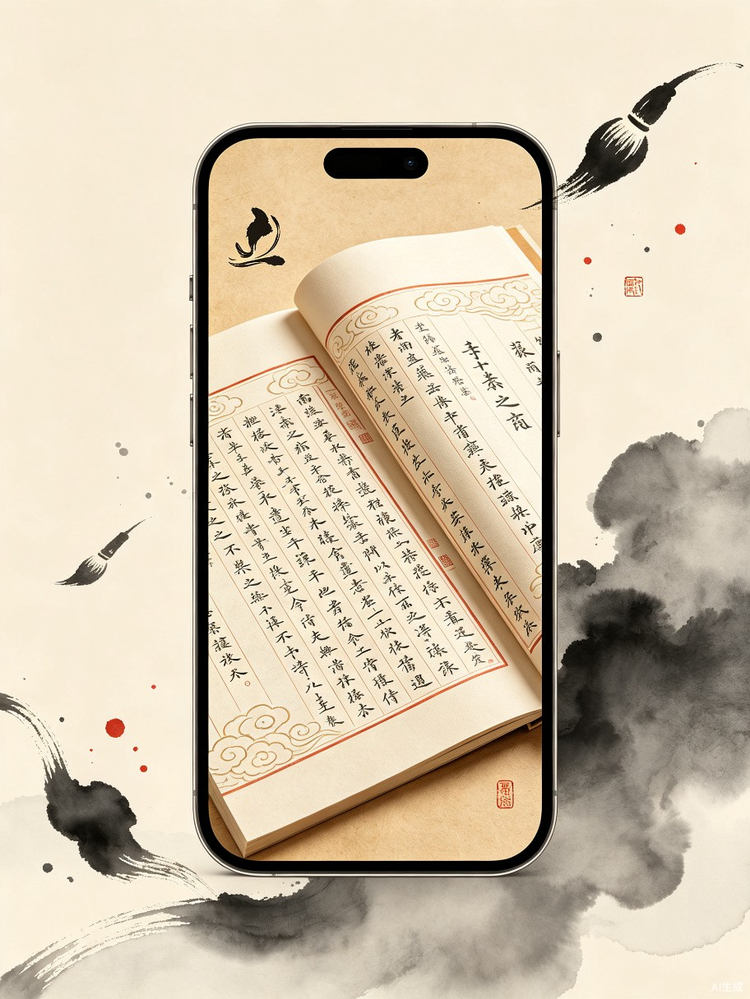

痛点与解法
古籍对年轻人来说"看不懂、看不进去、看了没用"，传统文化传播面临断层危机。
看不懂
繁体竖排、文言古语，没有专业训练根本无从入手。现有的古籍数字化产品只是简单扫描上传，没有真正降低理解门槛。
看不进去
碎片化阅读时代，年轻人习惯了短视频的节奏。大部头古籍缺乏吸引力，翻几页就放弃。
看了没用
古籍里的智慧无法与现代生活场景连接，看完就忘，无法内化为可用的知识。
传播断层
传统文化内容要么过于学术，要么粗制滥造。缺乏既专业又有趣的内容生产机制。
墨韵新声 用 AI 降低古籍内容生产成本，让一本典籍可以在几小时内变成 100 条短视频、10 个互动话题、无数张分享卡片。我们不是在保护古籍，而是在创造一种让古籍被主动消费的新形态。
产品概念
小程序/App 形态，以古风美学为视觉基调，四大核心模块覆盖视听、互动、创作、收藏全链路。

四大核心模块
从"看"到"聊"到"玩"到"藏"，构建完整的古籍消费闭环。
典籍剧场
选择典籍段落，AI 自动生成古风插画 + 配音朗读 + 双语字幕的 30-90 秒短视频。支持批量生成，让一本典籍变成 100 条短视频。
AI 视频生成古今对话
与孔子、庄子、诸葛亮等历史人物 AI 聊天。用现代语言提问，获得带有原文出处的智慧回答。支持语音对话，古风声线回复。
角色扮演 AI诗画接龙
AI 续写古诗词、人机对句比拼、典籍填空挑战。以游戏化方式降低古籍学习门槛，适合亲子互动和课堂使用。
游戏化学习我的典籍馆
收藏喜欢的章节和名句，生成个人精选集和分享卡片。支持将收藏内容导出为精美图文，一键分享到朋友圈和小红书。
社交传播典籍剧场
与孔子对话
诗画接龙
说乎 ✓
AI 续: 一色落霞孤鹜齐飞
用户体验流程
从"偶然发现"到"深度参与"到"主动传播"，三步构建用户粘性。
刷到内容
打开小程序，首页推荐"今日典籍"短视频，30秒看完一个古籍故事
产生兴趣
点击"了解更多"查看原文+注释，或与 AI 古人对话深入交流
参与创作
尝试"诗画接龙"创作自己的古风内容，获得成就感
主动传播
收藏内容生成分享卡片，发朋友圈/小红书，吸引更多人
形成习惯
每日打卡"每日一典"，积累个人典籍馆，成为长期用户
技术架构
基于 TRAE Work 和 TRAE IDE 的可实现技术方案
前端
微信小程序 / React 网页端，古风 UI 组件库
AI 大模型
文本生成（古文翻译/续写）、角色扮演对话
AI 绘图
古风插画生成，风格一致性控制
语音合成
古风 TTS 音色，多角色区分
视频合成
分镜脚本 + 插画 + 配音自动拼接
后端
Node.js / Python，古籍知识库 RAG
核心优势
为什么这个创意能在比赛中脱颖而出
零竞争者
大赛报名数据中无同类古籍活化作品，社会公益附加赛题中的"古籍活化"方向几乎空白。
传播裂变
短视频 + 分享卡片天然适合社交传播，用户即内容生产者，降低获客成本。
老少皆宜
学生用来学习，年轻人用来娱乐，家长用来给孩子启蒙，海外用户用来了解中国文化。
文化出海
双语版本可直接面向海外用户，成为传播中国文化的数字载体，社会价值巨大。